Show the code
dmd.mod <- lm(cbind(CK, Hpx, PK, LD) ~ group + age + month, data = Dystrophy)In a recent post, On Extending lm() Methods to "mlm", I argued that R fits a multivariate linear model with the same lm() call as a univariate one, but that many of the methods built around lm objects stop working, or quietly do something univariate. The underlying issue is that every object gains a dimension: a scalar becomes a vector, a variance becomes a covariance matrix, an interval becomes an ellipse. The thesis was:
A good multivariate extension isn’t just “run the univariate method \(q\) times”. It has to decide what to do with the extra dimension: find the matrix that plays the role of the scalar, and then find a way to see it. Most often, as it turns out, that way is an ellipse.
I ran into the same tensions again soon after. A re-reading of Rencher and Christensen (2012) on transformations of multivariate data (Andrews et al. 1971) suggested a new graphical method for choosing Box-Cox powers (Box and Cox 1964) for the responses in an mlm. It turned out to have a bonus: a transformation chosen for multivariate normality can also please Box’s \(\mathcal{M}\) (Box 1949), the test of equal covariance matrices that MANOVA relies on.
This post follows that work: what the univariate tools give you, what they miss, and the design decisions behind three new functions in heplots (version 1.8.7): bcProfile(), to see the likelihood for one or two powers; bcRefit(), to refit the model with the chosen powers; and bcBoxM(), to choose powers that make the covariance matrices alike. They are all documented on one help page, ?bcProfile.
The running example is heplots::Dystrophy (Rencher & Christensen, Table 5.7, from Andrews and Herzberg 1985). Four serum enzymes, creatine kinase (CK), hemopexin (Hpx), pyruvate kinase (PK) and lactate dehydrogenase (LD), were measured in 73 women, to see whether they can detect carriers of Duchenne muscular dystrophy. Age and the month of the blood sample are covariates.
dmd.mod <- lm(cbind(CK, Hpx, PK, LD) ~ group + age + month, data = Dystrophy)Enzyme levels are often skewed, so it is natural to ask about transformations. The familiar tool is the Box-Cox plot of the profile log-likelihood for the power \(\lambda\) in \(y^{(\lambda)} = (y^\lambda - 1)/\lambda\) (with \(\log y\) for \(\lambda = 0\)). With car::boxCox(), one response at a time:
op <- par(mfrow = c(2, 2), mar = c(4, 4, 3, 1))
for (v in c("CK", "Hpx", "PK", "LD")) {
boxCox(lm(reformulate(c("group", "age", "month"), response = v), data = Dystrophy),
main = v)
}
par(op)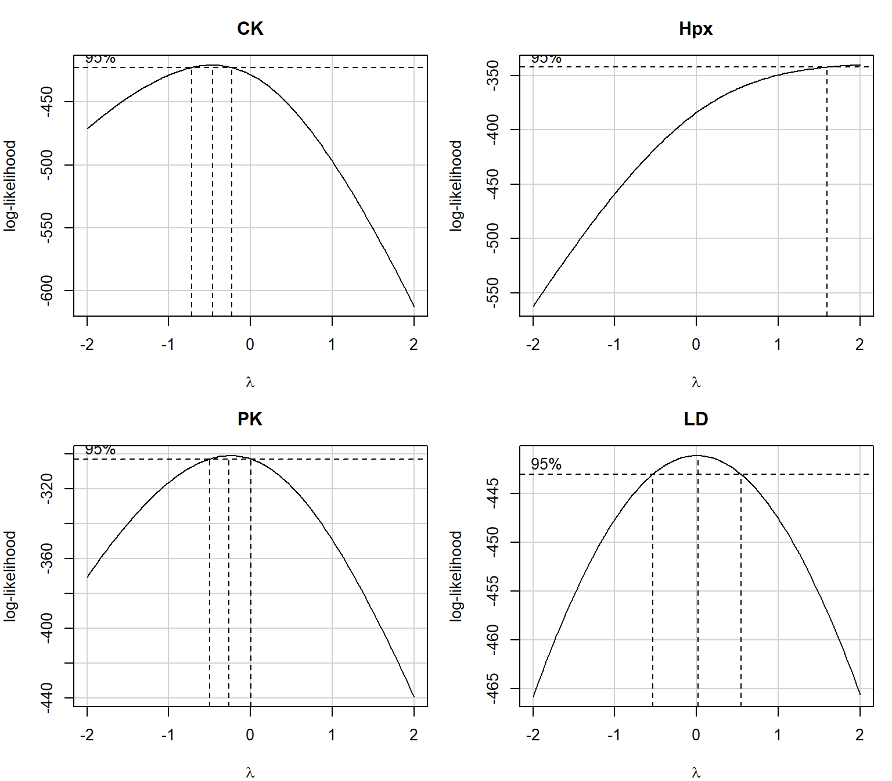
car::boxCox(), with the same predictors. The dashed lines mark the MLE and the 95% confidence interval for \(\lambda\).
Each panel gives a clear answer: CK wants something like \(1/\sqrt{y}\), PK and LD want a log, and hemopexin, skewed to the left, wants to be squared (its MLE, 2.3, is just beyond the default plotting range), which “log the skewed ones” would miss. In every panel, \(\lambda = 1\) is far outside the interval.
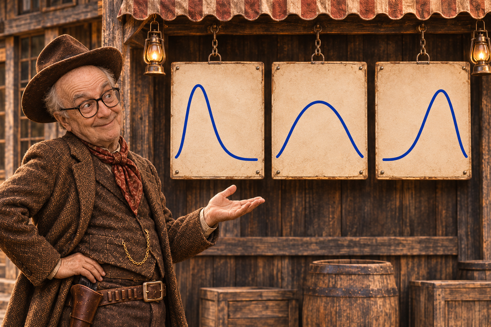
Four answers to what is really one question:
CK and PK is 0.78. The powers that make the joint distribution of the residuals closest to multivariate normal are not, in general, the ones that make each margin closest to normal.bartlettTests()), which says nothing about the covariances.Y <- model.response(model.frame(dmd.mod))
cor(residuals(dmd.mod)) |> round(2) CK Hpx PK LD
CK 1.00 0.12 0.78 0.38
Hpx 0.12 1.00 0.12 0.21
PK 0.78 0.12 1.00 0.50
LD 0.38 0.21 0.50 1.00bartlettTests(Y, Dystrophy$group)Bartlett's Tests for Homogeneity of Variance
Chisq df Pr(>Chisq)
CK 95.8201 1 < 2.2e-16 ***
Hpx 5.2818 1 0.021549 *
PK 60.5368 1 7.222e-15 ***
LD 9.6165 1 0.001928 **
---
Signif. codes: 0 '***' 0.001 '**' 0.01 '*' 0.05 '.' 0.1 ' ' 1boxCox() and it stops; so does MASS::boxcox():boxCox(dmd.mod)Error in `boxCox.default()`:
! This function is for univariate response onlyThis is another row for the “hook table” in the extending-lm post: a method that works for lm and refuses an mlm.
The surprise was that the estimation was already done. car::powerTransform() accepts an mlm and maximizes the multivariate likelihood of Andrews et al. (1971; Rencher and Christensen 2012, eq. 4.43), over all \(q\) powers at once. (I checked that it matches a direct optim() of eq. 4.43.) It also gives the two joint tests that the univariate plots lack:
dmd.pt <- powerTransform(dmd.mod)
summary(dmd.pt)bcPower Transformations to Multinormality
Est Power Rounded Pwr Wald Lwr Bnd Wald Upr Bnd
CK -0.3598 -0.5 -0.6077 -0.1120
Hpx 2.2493 2.0 1.5300 2.9687
PK -0.1500 0.0 -0.3858 0.0859
LD 0.0211 0.0 -0.5022 0.5444
Likelihood ratio test that transformation parameters are equal to 0
(all log transformations)
LRT df pval
LR test, lambda = (0 0 0 0) 96.16528 4 < 2.22e-16
Likelihood ratio test that no transformations are needed
LRT df pval
LR test, lambda = (1 1 1 1) 219.1944 4 < 2.22e-16Compared with the one-at-a-time estimates, the joint ones shift a little: for CK, from \(-0.47\) to \(-0.36\); for PK, from \(-0.25\) to \(-0.15\). Here the rounded powers come out the same. In the Diabetes example below they don’t.
uni <- sapply(c("CK", "Hpx", "PK", "LD"), \(v)
coef(powerTransform(lm(reformulate(c("group", "age", "month"), response = v),
data = Dystrophy))))
rbind(univariate = uni, multivariate = coef(dmd.pt)) |> round(2) CK.Y1 Hpx.Y1 PK.Y1 LD.Y1
univariate -0.47 2.32 -0.25 0.00
multivariate -0.36 2.25 -0.15 0.02One more question arises only when there’s a model with several responses: marginal or conditional? powerTransform(Y) makes the responses multinormal; powerTransform(mlm) makes the residuals multinormal, which is what MANOVA assumes. The functions here use the residual (conditional) version.
So the gap was not the statistics, but the graphics and the workflow: there is no plot() method for a powerTransform object, no easy way to refit with the chosen powers, and no before/after comparison. As the ?bcProfile help page now says, the work “stemmed from reading Rencher & Christensen’s description of the problem, and the recognition that car::powerTransform() had already done the heavy lifting”. That is the extending-lm story almost exactly: the hard part is the software design.
| Univariate | Multivariate |
|---|---|
| \(\lambda\), a scalar | \(\boldsymbol{\lambda} = (\lambda_1, \dots, \lambda_q)\), a vector |
| profile log-likelihood \(\ell(\lambda)\), a curve | a surface over \(q\) dimensions, shown as 1-D profiles and 2-D contour plots for pairs |
| 95% CI for \(\lambda\), an interval | a confidence region for a pair, with the Wald ellipse from the inverse Hessian beside the LR region |
| “is \(\lambda = 1\) in the interval?” | “how far is \((1, \dots, 1)\) from the region?”, an LR test on \(q\) df |
| transform \(\mathbf{y}\) | transform each column of \(\mathbf{Y}\), and refit |
| test equal variances; spread-level plot | test equal covariance matrices (Box’s \(\mathcal{M}\)); choose \(\boldsymbol{\lambda}\) to make them alike |
And once again, “find the ellipse that shows it”: the Wald confidence ellipse for \((\lambda_j, \lambda_k)\) is a data ellipse for parameters, and comparing it with the exact LR region shows how good the quadratic approximation is.
bcProfile()bcProfile(pt, variables) takes a powerTransform object (or an mlm, for which it calls powerTransform()). For one variable it gives a curve; for two, a surface: the dimension of the result follows the dimension of the question. Underneath is one small internal function that recomputes the log-likelihood from the pieces a powerTransform object keeps (the responses, and the QR decomposition of \(\mathbf{X}\)). It reproduces car’s LR tests exactly, so the plots and car’s tests can’t disagree.
The 1-D version looks like the univariate plot, but it is a profile of the joint likelihood: at each value of \(\lambda_j\), the other powers are re-estimated.
op <- par(mfrow = c(2, 2), mar = c(4, 4, 4, 4))
for (v in c("CK", "Hpx", "PK", "LD")) {
prof <- bcProfile(dmd.pt, v, extend_range = TRUE, group = Dystrophy$group)
plot(prof, main = v)
}
par(op)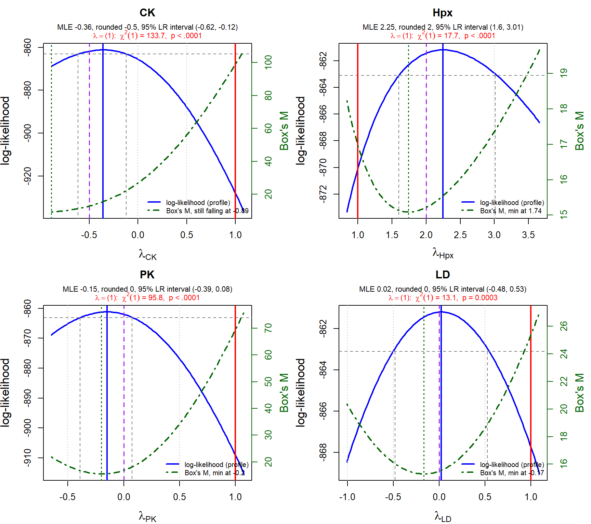
Two design decisions show here. Show how far “no transformation” is: with extend_range = TRUE, the range widens to include \(\lambda = 1\), marks it, and annotates its LR test. Around the MLE alone, the plot can’t show how strongly the data reject leaving things alone. And \(\lambda\) in the axis labels: \(\lambda_{CK}\), not CK, since the axis is a power, not data. The green curve for Box’s \(\mathcal{M}\) is the subject of a later section.
prof2x <- bcProfile(dmd.pt, c("CK", "Hpx"), extend_range = TRUE, n = 81,
group = Dystrophy$group)
plot(prof2x)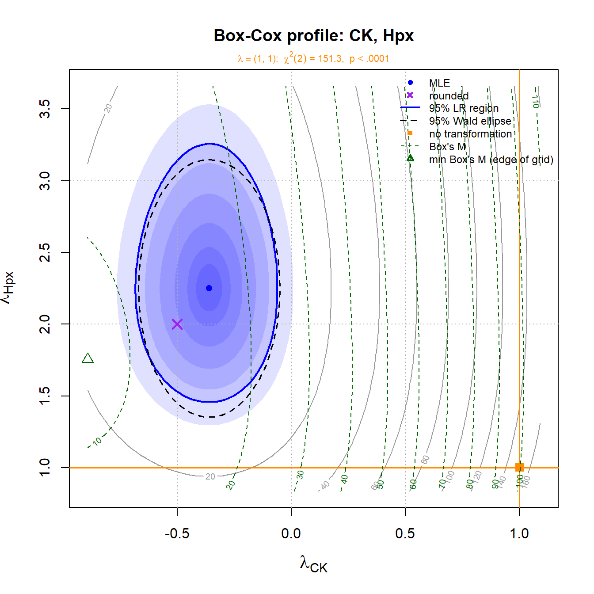
How to draw a likelihood surface took a few rounds. The answer was nested LR regions at several coverage levels, each with a light, low-alpha fill, so the colour builds up toward the maximum; a fine grid, so the contours are smooth; the 95% LR contour and the Wald ellipse drawn on top; and reference lines at the “nice” powers \(-1, -\tfrac12, 0, \tfrac12, 1, 2\). Here the Wald ellipse and the LR region nearly coincide, and \((1, 1)\) is far outside both.
A true profile re-maximizes over the other powers at every grid point: one optim() per point, about 10 seconds for a \(61 \times 61\) grid. A slice holds the other powers at their MLEs, and is instant. Which to use is a multivariate question: they agree when the \(\hat\lambda\)s are uncorrelated, and differ when they’re not. In Dystrophy, no correlation of the estimates exceeds 0.13. In the Diabetes data (below), the estimates for glufast and glutest correlate 0.40:
diab.mod <- lm(cbind(relwt, glufast, glutest, instest, sspg) ~ group, data = Diabetes)
diab.pt <- powerTransform(diab.mod)
cov2cor(diab.pt$invHess) |> round(2) [,1] [,2] [,3] [,4] [,5]
[1,] 1.00 0.01 0.00 0.00 0.04
[2,] 0.01 1.00 0.40 -0.11 0.08
[3,] 0.00 0.40 1.00 -0.10 0.09
[4,] 0.00 -0.11 -0.10 1.00 -0.02
[5,] 0.04 0.08 0.09 -0.02 1.00So a slice for \(\lambda_{glufast}\), which holds \(\lambda_{glutest}\) fixed, falls off too fast:
prof <- bcProfile(diab.pt, "glufast")
slice <- bcProfile(diab.pt, "glufast", type = "slice")
lam <- prof$grid[[1]]
par(mar = c(4.5, 4.5, 1, 1))
plot(lam, -prof$deviance / 2, type = "l", lwd = 2, col = "blue",
ylim = range(-slice$deviance / 2), cex.lab = 1.3,
xlab = expression(lambda[glufast]), ylab = "log-likelihood (relative to max)")
lines(lam, -slice$deviance / 2, lwd = 2, lty = 2, col = "red")
abline(h = -qchisq(0.95, 1) / 2, lty = 3)
legend("bottom", c("profile", "slice"), lwd = 2, lty = 1:2, col = c("blue", "red"),
bty = "n")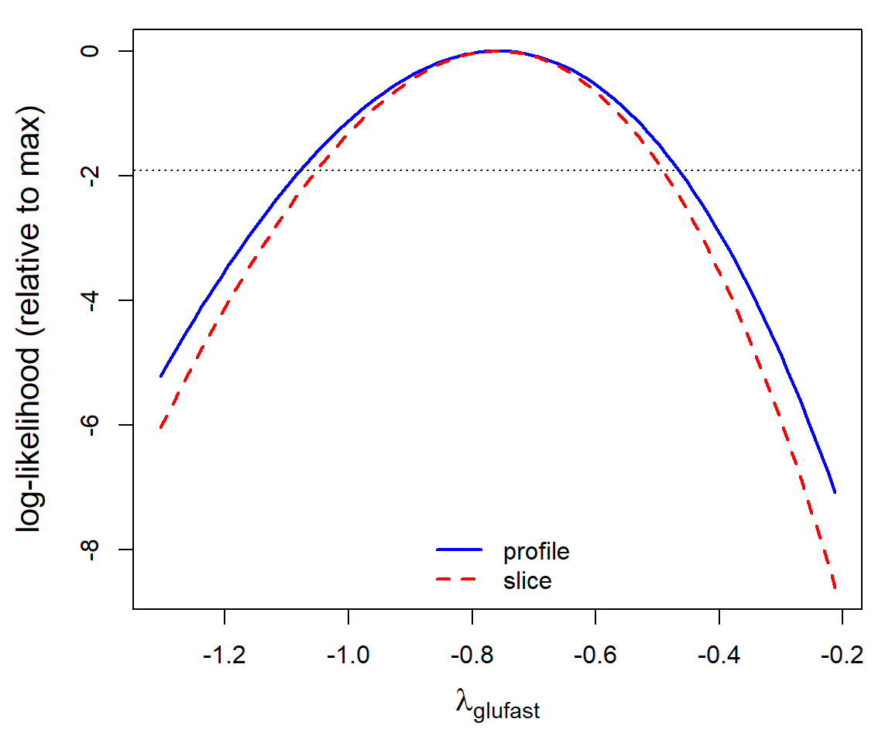
The profile interval is \((-1.08, -0.47)\), the slice \((-1.04, -0.50)\): a modest difference here, but in the direction that matters, overstating the precision. Conversely, a 2-D plot of (glufast, glutest) shows almost no difference between profile and slice, because what is held fixed is then the powers that aren’t correlated with them. So the cheap version is safe only when the powers held fixed are nearly uncorrelated with those plotted, and the default is type = "profile". An instance of knowing when the multivariate version adds nothing, and when it does.
bcRefit()Once the powers are chosen, the model has to be refit with the transformed responses. bcRefit(mod, lambda) does this; lambda may be a vector of powers or the powerTransform object itself, whose rounded powers are used.
dmd.bc <- bcRefit(dmd.mod, dmd.pt) # rounded powers (-0.5, 2, 0, 0)
colnames(coef(dmd.bc))[1] "CK_m0.5" "Hpx_2" "logPK" "logLD" Anova(dmd.bc)
Type II MANOVA Tests: Pillai test statistic
Df test stat approx F num Df den Df Pr(>F)
group 1 0.46928 14.5895 4 66 1.373e-08 ***
age 1 0.08956 1.6231 4 66 0.1789
month 1 0.13251 2.5205 4 66 0.0493 *
---
Signif. codes: 0 '***' 0.001 '**' 0.01 '*' 0.05 '.' 0.1 ' ' 1Three small decisions:
CK^-0.5 isn’t, so CK_m0.5, Hpx_2, logPK. The powers are kept as an attribute.Anova(), heplot(), cqplot() and boxM() all just work (boxM() given the grouping factor, when there are covariates; see Catching bugs). Return objects that work with the rest of the ecosystem.After the transformation, Pillai’s trace for group rises from 0.35 to 0.47, and the residuals are much closer to multivariate normal:
op <- par(mfrow = c(1, 2))
cqplot(dmd.mod, main = "Raw")
cqplot(dmd.bc, main = "Box-Cox")
par(op)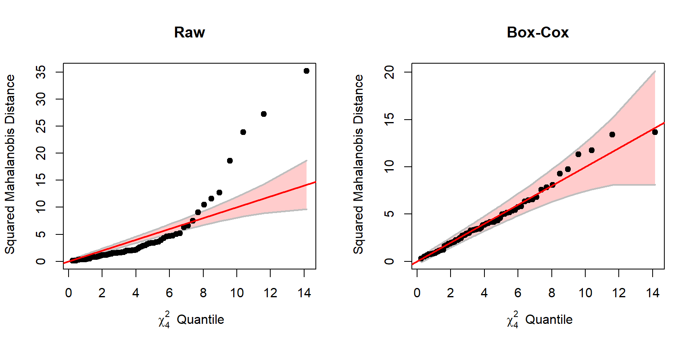
Box-Cox targets normality. But for MANOVA, equality of the group covariance matrices often matters more (Friendly 2007), and the Dystrophy groups are far from equal. The transformation chosen for normality also fixes this:
dmd.M0 <- boxM(model.response(model.frame(dmd.mod)), Dystrophy$group)
dmd.M1 <- boxM(model.response(model.frame(dmd.bc)), Dystrophy$group)
dmd.M0
Box's M-test for Homogeneity of Covariance Matrices
data: model.response(model.frame(dmd.mod)) by Dystrophy$group
Chi-Sq (approx.) = 134.4806, df = 10, p-value = < 2.2e-16dmd.M1
Box's M-test for Homogeneity of Covariance Matrices
data: model.response(model.frame(dmd.bc)) by Dystrophy$group
Chi-Sq (approx.) = 13.6105, df = 10, p-value = 0.1915plot.boxM() shows what the test statistic summarizes: the log determinant, \(\log |\mathbf{S}_i|\), of each group’s covariance matrix, a measure of its overall size (generalized variance), with a confidence interval, beside that of the pooled within-group matrix. The two panels have x ranges of the same width, so the gaps can be compared directly:
op <- par(mfrow = c(1, 2), mar = c(4.5, 8, 3, 1))
plot(dmd.M0, gplabel = "group", main = "Raw", xlim = c(20.5, 30.5))
plot(dmd.M1, gplabel = "group", main = "Box-Cox", xlim = c(-0.5, 9.5))
par(op)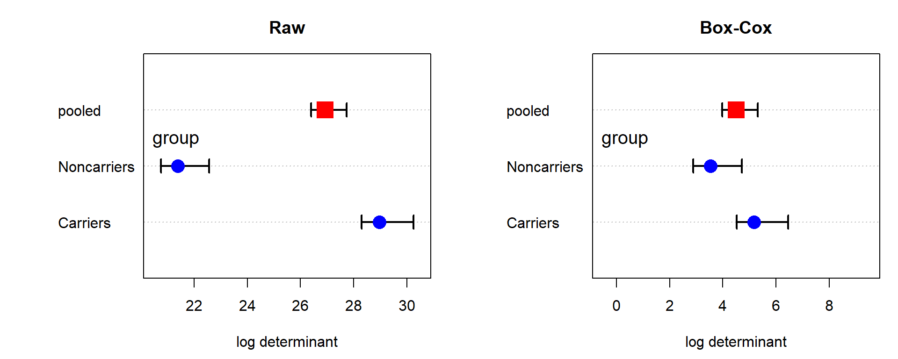
plot.boxM(), before and after the Box-Cox transformation. The x ranges have the same width (10 units).
In raw units, the carriers’ log determinant exceeds the noncarriers’ by 7.6: a generalized variance about 2000 times as large, reflecting the carriers’ much higher and more variable enzyme levels. After the transformation, the gap is 1.6, and the confidence intervals overlap.
That suggests a truly multivariate criterion: choose \(\boldsymbol{\lambda}\) to minimize Box’s \(\mathcal{M}\). \(\mathcal{M}\) is invariant to rescaling each variable, so no Jacobian is needed. The univariate ancestor is the spread-level plot, which chooses a power to stabilize the variance.
In Dystrophy the two criteria mostly agree. In Figure 2, \(\mathcal{M}\) is smallest inside the 95% LR intervals for Hpx, PK and LD. Only for CK do they disagree: \(\mathcal{M}\) keeps falling toward \(-1\), beyond the interval.
heplots::Diabetes (Reaven and Miller 1979) has five measures of glucose tolerance and insulin response for 145 non-obese adults, in three groups: normal, chemical diabetic and overt diabetic. Here the one-at-a-time and joint estimates do differ, for the two glucose measures, which are highly correlated:
vars <- c("relwt", "glufast", "glutest", "instest", "sspg")
uni <- sapply(vars, \(v)
coef(powerTransform(lm(reformulate("group", response = v), data = Diabetes))))
rbind(univariate = uni, multivariate = coef(diab.pt)) |> round(2) relwt.Y1 glufast.Y1 glutest.Y1 instest.Y1 sspg.Y1
univariate 1.27 -1.51 -0.93 0.28 0.52
multivariate 1.19 -0.76 -0.27 0.19 0.55The normality transformation takes \(\mathcal{M}\) from about 397 to 145. Minimizing \(\mathcal{M}\) directly, with bcBoxM(), gets only a little further:
diab.bc <- bcRefit(diab.mod, diab.pt)
c(raw = boxM(model.response(model.frame(diab.mod)), Diabetes$group)$statistic,
BoxCox = boxM(model.response(model.frame(diab.bc)), Diabetes$group)$statistic) raw.Chi-Sq (approx.) BoxCox.Chi-Sq (approx.)
396.7996 144.9282 bm <- bcBoxM(Diabetes[, vars], Diabetes$group)
round(bm$lambda, 2) relwt glufast glutest instest sspg
6.34 -1.01 -0.60 0.31 0.57 bm$M[1] 138.2147and it does so by sending relwt to a power around 6, where \(\mathcal{M}\) is flat, at a large cost in normality. The lesson: an optimizer will exploit a flat direction. So show the criterion as a plot rather than optimize it blindly. bcProfile(..., group = ) computes \(\mathcal{M}\) at the same full \(\boldsymbol{\lambda}\) as the log-likelihood at every grid point, and plot() draws it on a second axis (1-D) or as dashed contours (2-D), with a note when its minimum is at the edge of the grid (“still falling”). bcBoxM() is kept, with a warning in the documentation.
The clearest single picture is the covariance ellipses before and after:
Y <- model.response(model.frame(diab.mod))
Z <- model.response(model.frame(diab.bc))
op <- par(mfrow = c(1, 2))
covEllipses(Y[, c("glufast", "glutest")], Diabetes$group, fill = TRUE, fill.alpha = 0.1,
main = "Raw")
covEllipses(Z[, c("glufast_m1", "glutest_m0.5")], Diabetes$group, fill = TRUE,
fill.alpha = 0.1, main = "Box-Cox")
par(op)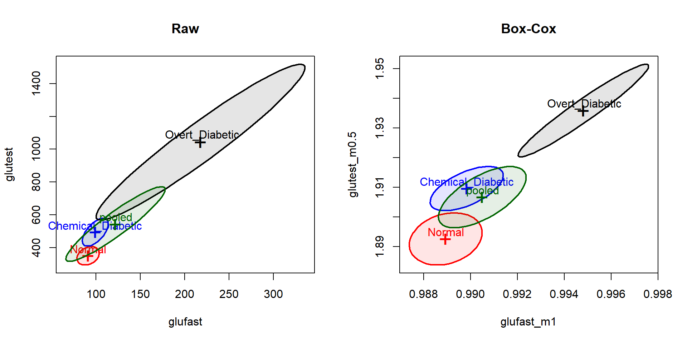
glufast and glutest in the three Diabetes groups, before and after the Box-Cox transformation.
In raw units, the overt diabetics’ ellipse dwarfs the others. After the transformation the three are much closer in size, but differences in shape and orientation remain that no power transformation can remove.
That figure shows only one pair of the five responses. The plot.boxM() view, as in Figure 6, uses all five at once:
diab.M0 <- boxM(diab.mod)
diab.M1 <- boxM(diab.bc)
op <- par(mfrow = c(1, 2), mar = c(4.5, 9, 3, 1))
plot(diab.M0, gplabel = "group", main = "Raw", xlim = c(22.5, 31.5))
plot(diab.M1, gplabel = "group", main = "Box-Cox", xlim = c(-28.5, -19.5))
par(op)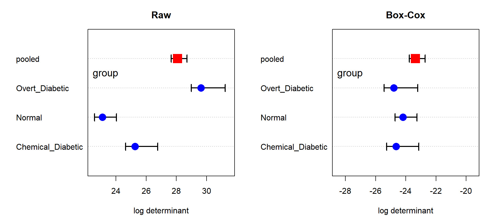
plot.boxM(), before and after the Box-Cox transformation. The x ranges have the same width (9 units).
In raw units, the log determinants spread over about 6.5 units: the overt diabetics’ covariance matrix has a generalized variance hundreds of times that of the normal group. After the transformation, the three groups are within 0.6 of each other. Their sizes are now nearly equal.
But the pooled matrix now sits above every group. Because \(\log |\mathbf{S}|\) is concave, the log determinant of the pooled matrix is always at least the (weighted) average of the groups’. If the groups differed only in size (\(\mathbf{S}_i = c_i \mathbf{S}\)), it could not exceed the largest of them. When it does, the matrices must differ in shape or orientation. So this plot says where the remaining \(\mathcal{M} = 145\) comes from: not from size, which the transformation fixed, but from the shape and orientation differences visible in the ellipses for glufast and glutest.
In designing heplots functions for this, there are few more that decide whether a plot can be read easily and whether users can find these methods helpful:
Colours are arguments, and the defaults depend on the plot. The “\(\lambda = 1\)” highlight is bold red in a 1-D plot, but dark orange in the busier 2-D plot, where red competes with everything else. To keep that unambiguous, the rounded powers are purple and Box’s \(\mathcal{M}\) dark green.
Plotmath, not Unicode, for annotations like “\(\lambda = 1\): \(\chi^2(1) = \dots\)”, so they work on every graphics device. R CMD check runs the examples on pdf(), which can’t always encode \(\lambda\) or \(\chi^2\).
A larger cex.lab (1.3) by default, since that’s what users end up overriding. More generally, choice of defaults should always be considered.
Help pages: It is most useful if users (and agents!) can find related topics via See Also links. bcProfile(), bcRefit() and bcBoxM() are one workflow, so they share ?bcProfile (not ?bcPower, which would collide with car’s topic). The See also is organized by relationship: estimation and tests (car); the univariate versions (car::boxCox(), MASS::boxcox(), symbox(), spreadLevelPlot()); checking assumptions before and after (cqplot(), boxM(), covEllipses(), bartlettTests(), leveneTests()); an alternative for heavy tails rather than skewness (robmlm()); and seeing the effects after (heplot(), pairs.mlm()). That grouping is itself a small map of where this sits among multivariate diagnostics.
bcProfile() answers questions about one power or one pair. With four or five responses, the next question is how to see all of them at once. This part isn’t done, and it is where the design questions get interesting.
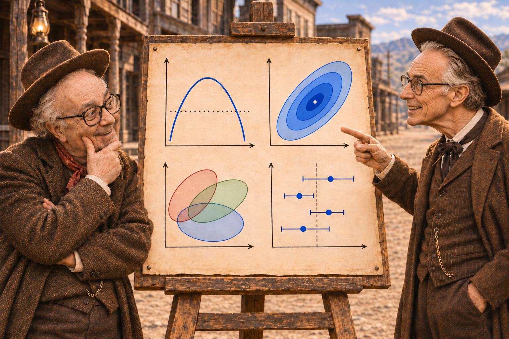
pairs() method, and what to leave outThe obvious next step is a pairs() method: 1-D profiles on the diagonal, 2-D profiles off it, as pairs.mlm() does for HE plots. But a pairs plot multiplies the clutter of one panel by \(q^2\). A pairs method has to decide what to show and what to exclude to show something useful. The questions:
glufast, glutest), at 0.40, stands out. So compute the 2-D profile only where the correlation is large, and show something cheaper elsewhere: the Wald ellipse alone, which is free from the inverse Hessian, or just the correlation as a number.relwt in Diabetes) needs no transformation, and including it adds a row and a column of empty panels. Default to the responses that need transforming (by the LR test of \(\lambda_j = 1\)), with variables = to override.optim() per grid point, 10–20 seconds for a \(61 \times 61\) grid; with \(q = 5\) there are 10 pairs. A slice is instant, but misleads exactly when the \(\hat\lambda\)s are correlated, which is when the 2-D panel matters. So: profiles only for the selected pairs, on a coarser grid in small panels.Is a pairs plot the right display at all? For most data, the useful summary is per variable: the MLE and its interval, the rounded power, where Box’s \(\mathcal{M}\) is smallest, whether the two criteria agree, and how far \(\lambda = 1\) is. All of that comes from the 1-D profiles. A quick prototype:
# One row per response, from the 1-D profiles: MLE, LR interval, rounded power,
# where Box's M is smallest (and whether that is at the edge of the grid),
# and the LR test that this lambda = 1, with the others at their MLEs
bc_summary <- function(pt, group, level = 0.95) {
vars <- names(coef(pt))
do.call(rbind, lapply(vars, function(v) {
p <- bcProfile(pt, v, extend_range = TRUE, group = group)
lam <- p$grid[[1]]
inside <- lam[p$deviance <= qchisq(level, 1)]
data.frame(variable = v, mle = p$lambda[v], lwr = min(inside), upr = max(inside),
rounded = p$roundlam[v], Mmin = lam[which.min(p$M)],
Medge = which.min(p$M) %in% c(1, length(lam)),
LR1 = testTransform(pt, replace(pt$lambda, v, 1))$LRT,
row.names = v)
}))
}
dmd.sum <- bc_summary(dmd.pt, Dystrophy$group)
diab.sum <- bc_summary(diab.pt, Diabetes$group)
diab.sum[, -1] |> round(2) mle lwr upr rounded Mmin Medge LR1
relwt 1.19 0.08 2.30 1.00 3.41 1 0.11
glufast -0.76 -1.06 -0.48 -1.00 -1.01 0 192.71
glutest -0.27 -0.53 -0.04 -0.50 -0.61 0 131.78
instest 0.19 0.06 0.34 0.33 0.30 0 88.36
sspg 0.55 0.34 0.76 0.50 0.57 0 16.78bc_dotplot <- function(s, main = "", xlim = range(-1.5, 3.5)) {
n <- nrow(s); y <- n:1
plot(NA, xlim = xlim, ylim = c(0.5, n + 0.5), yaxt = "n", cex.lab = 1.3,
xlab = expression("power, " * lambda), ylab = "", main = main)
axis(2, at = y, labels = s$variable, las = 1)
abline(v = c(-1, -0.5, 0, 0.5, 2, 3), col = "gray90")
abline(v = 1, col = "darkorange", lwd = 2)
segments(s$lwr, y, s$upr, y, col = "blue", lwd = 3)
points(s$mle, y, pch = 16, col = "blue", cex = 1.4)
points(s$rounded, y, pch = 4, col = "purple", cex = 1.4, lwd = 2)
Mx <- pmin(pmax(s$Mmin, xlim[1]), xlim[2])
points(Mx, y + 0.25, pch = ifelse(s$Medge, 2, 17), col = "darkgreen", cex = 1.3)
edge <- which(s$Medge)
if (length(edge))
arrows(Mx[edge], y[edge] + 0.25, Mx[edge] + 0.4 * sign(Mx[edge] - s$mle[edge]),
y[edge] + 0.25, length = 0.08, col = "darkgreen", xpd = NA)
mtext(sprintf("%.1f", s$LR1), side = 4, at = y, las = 1, line = 0.5, cex = 0.9)
mtext(expression(chi^2 * (1)), side = 4, at = n + 0.75, las = 1, line = 0.5, cex = 0.9)
}
op <- par(mfrow = c(1, 2), mar = c(4.5, 6, 3, 3.5))
bc_dotplot(dmd.sum, main = "Dystrophy")
bc_dotplot(diab.sum, main = "Diabetes")
par(op)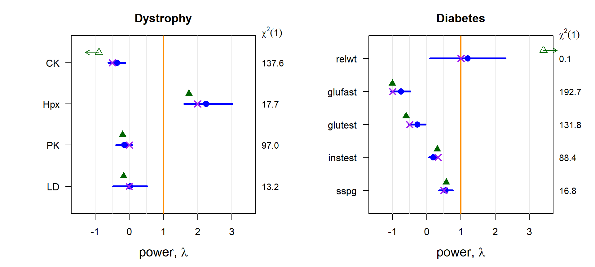
This shows at a glance what took several 1-D and 2-D plots above. In Dystrophy, the two criteria agree for Hpx, PK and LD; only for CK is Box’s \(\mathcal{M}\) still falling, toward a reciprocal, outside the interval. In Diabetes they agree for the four measures that need transforming. For relwt, \(\lambda = 1\) is inside the interval (\(\chi^2(1) = 0.1\)), and \(\mathcal{M}\) just drifts toward the edge: that flat direction is what sent bcBoxM() to a power of 6. A display like this, with 2-D panels kept for the few correlated pairs, may say more than a full \(q \times q\) matrix.
Box-Cox needs positive responses. Zeros (counts, times, concentrations below a detection limit) and negative values need either a shift (a start value added to each response), car’s bcnPower family (Box-Cox with negatives, Hawkins and Weisberg 2017), or the Yeo-Johnson family (Yeo and Johnson 2000), both available in car::powerTransform(). For an mlm, that means a shift or a \(\gamma\) parameter for each response: another dimension again. For now, bcProfile() handles only the bcPower family, and its help page points to the others.
A plot() method for powerTransform objects arguably belongs in car, next to powerTransform() itself, rather than in heplots. That is a question for John Fox. It is also a familiar one from the extending-lm post: when the multivariate extension of a method in one package is written in another, where should it live?
Writing this up had a side effect I didn’t plan for: it turned up bugs, in my own packages, that had been sitting there quietly. Not in the new code, but in old code that the new work happened to lean on in a new way.
boxM() with covariates. The Dystrophy model has two covariates, age and month. Given that model, boxM() formed “groups” from every distinct combination of group, age and month: 66 groups of one person each, all with singular covariance matrices, and a test statistic of NA, with only a long warning to say why. The documentation said the predictors “must all be factors”, but nothing checked it. It now stops with a message that says what to do instead: boxM(Y, group).boxM() with crossed factors. Testing that fix turned up a second bug, in the same three lines: for a two-way design, lm(cbind(...) ~ A * B), boxM() failed with “undefined columns selected”, because it looked up the interaction term A:B as if it were a column of the data. Both bugs came from a rewrite a year earlier, which replaced a call to the (correct) formula method with new code that handled only the simplest case: one factor, no covariates. That is the case every example in the documentation used.glufast, glutest). Drawing the figure showed they don’t. The difference shows in 1-D, as in Figure 4, and the rule is about the powers held fixed, not the ones plotted. Not a bug in the code, but a bug in the explanation, which would have gone into the help page.influence(fit, m = 2) fails, because m partially matches the generic’s argument model; and cooks.distance() for an mlm names its result by case number rather than by the row names of the data.None of these would show up in a univariate analysis, or in the examples on the help pages. They showed up because extending a method to an mlm sends ordinary objects down paths nobody had walked: a MANCOVA rather than a one-way MANOVA, a two-way design, a model with several responses and a subset size. That is what should happen when you bring a univariate method to Multivariate Town. The extra dimension is a test as well as a feature: every object that gains a dimension is a new chance for code to be wrong, and a worked example that actually uses it is the cheapest way to find out.
A practical lesson: when a bug turns up in the middle of writing, write it down where it will be fixed, not where it was found. Each of these went into the package’s own task list, with the error, a reproduction and a suggested fix, and the boxM() bugs were fixed (in heplots 1.9.0, in development) before this post was finished.
The thesis held a second time, on a problem I didn’t choose for it. I didn’t pick Box-Cox to illustrate the extending-lm post; it came from re-reading Rencher & Christensen. Yet every row of Table 1 appeared on its own: the power became a vector, the interval became a region, the test of “no transformation” moved to \(q\) degrees of freedom, and once again the way to see it was an ellipse, the Wald ellipse beside the likelihood region. An example that wasn’t chosen to fit the thesis is better evidence for it than one that was.
The statistics were done; what was missing was graphics and workflow. The multivariate likelihood goes back to Andrews et al. (1971), and car::powerTransform() had long since implemented it for an mlm. What wasn’t there was a way to see the likelihood, to refit with the chosen powers, and to compare the model before and after. That is the same finding as in the extending-lm post, and it suggests a working rule: before extending a method, check whether the computation already exists, and look for the missing display.
The multivariate version asks questions the univariate one can’t. Should the powers be chosen jointly or one at a time (they disagree, for the correlated Diabetes measures)? Should the responses be made normal, or the residuals? Is a cheap slice good enough, or is a profile needed (only when the estimates are correlated)? Are the covariance matrices equal, not just the variances? None of these arises with one response. They, more than the extra computation, are where the extension earns its keep.
A second criterion is a bonus, but show it; don’t just optimize it. Box’s \(\mathcal{M}\) gave a truly multivariate reason to choose a transformation, and the transformation chosen for normality often pleased it as well: in Dystrophy, the test of equal covariance matrices went from overwhelming to unremarkable. But minimizing \(\mathcal{M}\) directly sent relwt to a power of 6, along a direction where \(\mathcal{M}\) was flat. When a criterion is flat, an optimizer reports noise as an answer, and a plot shows the flatness. Hence the green curves and contours in the bcProfile() plots, and the warning on bcBoxM().
Knowing what to leave out is the next design problem. With one or two powers, the question was how to draw a likelihood. With five, it is what not to draw. The pairs() questions and the one-row-per-response prototype say the same thing: more dimensions call for more selection, not more panels. That is where this work stops for now, and it is a display problem, not a statistical one.
And, as in Catching bugs: bringing a method to Multivariate Town is also a test of the code it leans on. Every object that gains a dimension is a new place for something to be wrong.
For more on these methods and the ideas behind them, see Visualizing Multivariate Data and Models in R (Friendly 2024).